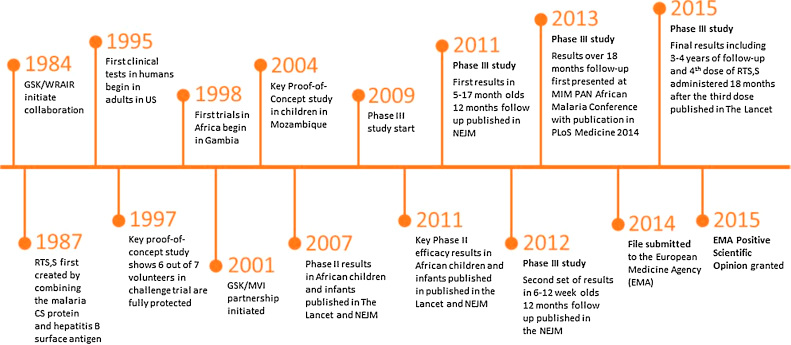
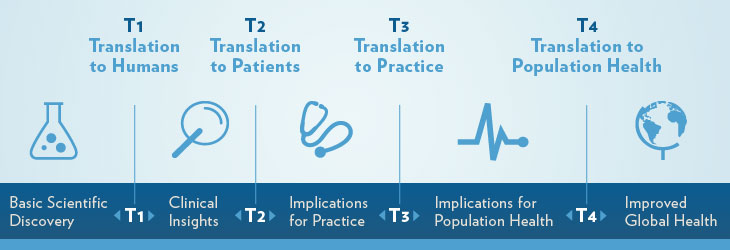
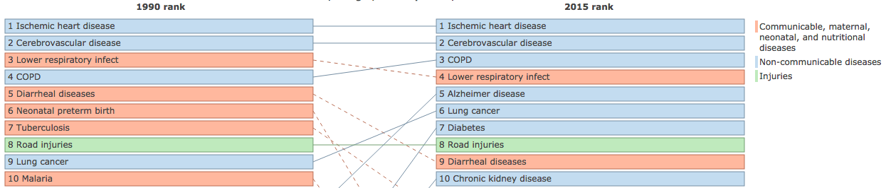

Chapter 1 Global Health Research
1.1 What is Global Health?
New York County Courthouse, Lower Manhattan, New York City, circa 2009
Judge presiding over jury selection: And what do you do, Mr. Green?
Me: Global health research.
Judge:
Me: I study access to mental health services.
Judge: So health policy then?
Me: No, mostly intervention research.
Judge: Globally.
Me: No, not quite.
Judge: What is global health, Mr. Green?
Me: Well, you see…rambles…
Judge: Thank you, Mr. Green. You are dismissed.
I’ve had this conversation thousands of times since that court appearance. Now when asked, I say something like, “global health takes a global perspective on public health problems,” drawing inspiration from Skolnik.11. Skolnik, R. (2019). Global health 101, fourth edition. Jones & Bartlett Learning. https://books.google.com/books?id=csm4DwAAQBAJ In the wake of the pandemic, I find that people nod along at this framing. It makes sense to them. Thanks, COVID-19!
Go any deeper below the ontological surface, however, and you’ll find that there is not a consensus definition of global health. Like some of my colleagues,22. Merson, M. H., Black, R. E., & Mills, A. J. (2018). Global health: Diseases, programs, systems, and policies (4th ed.). Jones & Bartlett Learning. https://books.google.com/books?id=vqVuDwAAQBAJ I reference Koplan et al.33. Koplan, J. P., Bond, T. C., Merson, M. H., Reddy, K. S., Rodriguez, M. H., Sewankambo, N. K., & Wasserheit, J. N. (2009). Towards a common definition of global health. The Lancet, 373(9679), 1993–1995. who define global health as:
[a]n area for study, research, and practice that places a priority on improving health and achieving equity in health for all people worldwide. Global health emphasizes transnational health issues, determinants, and solutions; involves many disciplines within and beyond the health sciences and promotes interdisciplinary collaboration; and is a synthesis of population-based prevention with individual-level clinical care.
Take note of two key elements of their definition:
- it includes scholars, researchers, and practitioners working across disciplinary boundaries; and
- it goes beyond simply improving health to include the goal of achieving health equity.
To expand on the first point, this definition reflects the reality that global health challenges are complex, so the search for solutions must span disciplines. In the study of malaria, for example, you can read about the spread of the disease (epidemiology), the impact of illness on future productivity (economics), the merits of free or subsidized bed nets (public policy), mosquito habitats (ecology), the efficacy of vaccines to prevent the disease (medicine and statistics), rapid diagnostic tests (biomedical engineering), and the adoption and use of bed nets (psychology), just to name a few areas of inquiry.
The second point is that global health is action-oriented, seeking to achieve health equity for all people worldwide. The WHO defines equity as follows:44. WHO. (2021). Health Equity. https://www.who.int/health-topics/health-equity
Equity is the absence of unfair, avoidable or remediable differences among groups of people, whether those groups are defined socially, economically, demographically, or geographically or by other dimensions of inequality (e.g. sex, gender, ethnicity, disability, or sexual orientation). Health is a fundamental human right. Health equity is achieved when everyone can attain their full potential for health and well-being.
Put another way, health inequities are unfair and unjust differences in healthcare access or health outcomes that can be prevented or fixed. Health inequities are structural, often resulting from decisions we make about who gets access to resources.
The consequence of inequity is often inequality. For instance, inequitable access to healthcare services can lead to unequal health outcomes, health inequalities, between groups. Differences in health status are also referred to as health disparities.
The COVID-19 pandemic has given us many examples of health inequities, inequalities, and disparities. For instance, data compiled by the website Health Inequities Tracker shows that through at least August 2021, Hispanics and Latinos were over-represented in COVID-19 hospitalizations, while non-Hispanic Whites were substantially under-represented.55. Satcher Health Leadership Institute. (2021). Health Equity Tracker. https://healthequitytracker.org
The WHO defines social determinants of health as “the circumstances in which people are born, grow up, live, work and age, and the systems put in place to deal with illness. These circumstances are in turn shaped by a wider set of forces: economics, social policies, and politics.”66. WHO. (2013). Social determinants of health: Key concepts. https://www.who.int/news-room/q-a-detail/social-determinants-of-health-key-conceptsy
To look for the potential causes of this health disparity is to investigate possible social determinants of health. Macias Gil et al. point to several factors that might help to explain why Latinos and Hispanics were disproportionately affected by COVID-19.77. Macias Gil, R., Marcelin, J. R., Zuniga-Blanco, B., Marquez, C., Mathew, T., & Piggott, D. A. (2020). COVID-19 pandemic: Disparate health impact on the hispanic/latinx population in the united states. The Journal of Infectious Diseases, 222(10), 1592–1595.
- Higher rates of underlying conditions
- More likely to be underinsured or uninsured
- Undocumented immigration status
- Language barriers to accessing services
- Overrepresentation in “essential” jobs where working from home was not possible
- Greater financial pressures to show up to work, even if unwell or potentially exposed to the virus
- More likely to live in multigenerational homes
1.2 What is Research?
Definitions of research typically include two key elements: research is (i) a systematic investigation (ii) designed to develop or contribute to generalizable knowledge.
By generalizable knowledge, we mean that the investigation intends to advance our scientific understanding. One way that a study can advance scientific understanding is by applying the results from a limited investigation to a larger group of people not involved in the study.
For instance, you might interview parents of young children about their use (or lack thereof) of mosquito nets. You intend to analyze the transcripts and develop new ideas about the barriers to bed net use that you hope to publish in an academic journal. Other scholars will read this work use it to develop new theories of health behavior and create new interventions that promote bed net use. This is research.
But what if a journalist decides to write a feature article about the burden of malaria and interviews a few of the same parents. Is this research?
No. For one, the journalist might not follow a systematic method for deciding which parents to approach, how to conduct the interviews, or how to synthesize what they learn. Second, the journalist has a different objective. Whereas you wanted to systematically advance our understanding of barriers to bed net use—insights that might apply to different parents in other settings—the journalist intends to inform the public by telling the stories of a few specific parents.
Another way that a study can advance scientific understanding is by developing and testing scientific methods and procedures. For instance, a research team might plan a small pilot test to collect initial data that will inform the design of a larger study. In most cases, we’d consider these pre-study activities to be research—even if the team does not intend to publish the results—because the pilot study is part of the knowledge generation process.
But here again, intent matters. An example of a systematic investigation NOT intended to produce generalizable insights might be a company’s A/B test of two different email marketing campaigns. Acme Corp. randomly assigns a small percentage of its users to receive email campaign A vs campaign B and tracks which campaign generates the most clicks or sales. The company’s objective is to determine which campaign optimizes their marketing spend for conversions, not to say something more general about human perception and behavior. Therefore, it’s not considered research.
As we’ll discuss in a later chapter, it’s always a good idea to consult with an Institutional Review Board to determine if your proposed work is considered research (and if it is, whether it falls under policies requiring ethical review).
1.3 What is Science?
Whether you are designing a study that relies on qualitative methods, quantitative methods, or a blend of both, there are
There are three main characteristics of scientific research that apply to most of global health:88. King, G., Keohane, R. O., & Verba, S. (1994). Designing social inquiry: Scientific inference in qualitative research. Princeton University Press. http://amzn.to/1N7Hi0c
- the goal is inference;
- the procedures are public; and
- the conclusions are uncertain.
THE GOAL IS INFERENCE
Science is more than observation. To create generalizable knowledge, you
It’s data + inference.
Inference is using the data you have to make conclusions about
making conclusions about some unobserved or unmeasured phenomenon based on direct observations of the world. What is known is used to infer something about things that are not known. This process can be deductive or inductive.
In deductive reasoning, we start from general theories and make hypotheses. Then we collect data and make conclusions based on the data. Inductive reasoning flows the other direction, from specific observations to the generation of hypotheses and theories. To say that quantitative research is deductive and qualitative research is inductive is not quite right, but it’s often true.
The point to take away about inference is that, regardless of the approach to reasoning, the goal of scientific research is to use what we observe to make conclusions about what we do not or cannot observe directly. This is sometimes referred to as empiricism, and our systematic observations are empirical evidence. Empiricism is at the heart of scientific research.
THE PROCEDURES ARE PUBLIC
](images/pancakes2.png) Figure 1.1: A poorly documented Method section. Source: http://tinyurl.com/yxtabza3
Figure 1.1: A poorly documented Method section. Source: http://tinyurl.com/yxtabza3
Scientific research uses public methods that can be examined and replicated. A Method section in a scientific paper is like a recipe. If you have ever tried to follow a confusing recipe, you can appreciate the importance of good documentation. Your study’s recipe must be clear (well written), thorough (no “dash” of this or that), and shared publicly (not a secret passed down to lab members).
Replication is a core principle of scientific research. No one study rules the day. If the results of a study are robust, another research group should be able to follow your recipe and replicate the findings. When such findings are replicated, we all have more confidence in the results.
In later chapters we’ll learn strategies for writing a good Method section (and appendices!) and discuss why replications are actually rare in practice—and why they can be so controversial.
THE CONCLUSIONS ARE UNCERTAIN
Every method has limitations, every measurement has error, and every model is wrong to some extent. Take the estimation of maternal mortality rates as an example.99. Hogan, M. C., Foreman, K. J., Naghavi, M., Ahn, S. Y., Wang, M., Makela, S. M., Lopez, A. D., Lozano, R., & Murray, C. J. (2010). Maternal mortality for 181 countries, 1980–2008: A systematic analysis of progress towards millennium development goal 5. The Lancet, 375(9726), 1609–1623. http://www.thelancet.com/journals/lancet/article/PIIS0140-6736(10)60518-1/abstract published maternal mortality estimates for 181 countries. Some countries, such as the United States, have vast amounts of data in vital registries that attempt to track all births and deaths. It’s not perfect, so we still estimate the maternal mortality rate using a statistical model (we’ll discuss models more in a later chapter).
As you can see in the left panel of Figure ??, the United States has a very low level of maternal mortality, between about 10-20 maternal deaths for every 100,000 live child births. Compared to some countries, the US has a lot of data points for estimating the level and trend in maternal deaths, so the “uncertainty band” is narrow.
Now take a look at Afghanistan on the right. Note that the y-axis scale is much larger in the 1000s, reflecting the fact that many more Afghan women die of causes related to pregnancy or childbirth. Next, pay attention to the width of the uncertainty band. It spans a range of more than 3000 deaths. Compare this to a range of fewer than 5 deaths in the US! This is because there are very few data points available to estimate the “true” value in Afghanistan, and these individual data points can differ by more than 1000 deaths. We don’t know much about maternal mortality in Afghanistan, but the blue line is our best guess.
The takeaway message is that there is uncertainty in everything. No single estimate can be considered “The Truth.” Instead, we must focus on the origin of estimates and recognize the limitations of what we know or what is being reported.
1.4 What Constitutes Global Health Research?
Global health research brings together scholars and practitioners from many different disciplines to tackle big challenges. Therefore, the methods of these disciplines are the methods of global health research. We can organize the landscape as shown in Figure 1.2.
Figure 1.2: A research taxonomy
Research is divided into two main categories: basic and applied. Overlapping with applied research is an area of work called “monitoring and evaluation,” or M&E. Let’s examine what constitutes research before turning to M&E.
BASIC RESEARCH
Basic research—also known as “pure” or “blue skies” research—is the pursuit of fundamental knowledge of phenomena. For example, scientists conduct laboratory experiments to understand the parasitic life cycle and how parasites interact with humans at different stages. Another example is the scientific investigation of the properties of cancer cells to better understand how they grow and spread.
The information generated by basic science becomes the basis for applied science. It’s the “bench” in the “bench to bedside” cascade of research needed to take an idea from the lab (the bench) to a new medical treatment (delivered to the patient’s bedside).
Harvard Medical School’s Rachel Wilson explains this beautifully:
The new therapies of today were the prototypes of yesterday. And the prototypes of yesterday were previously just findings in laboratories, and before that they were just an idea. Unless we have new ideas, we’re not going to have useful therapies. Great new therapies don’t just fall like apples from a tree.
APPLIED RESEARCH
Applied research focuses on specific problems or real-world applications. Whereas the basic scientist might toil away in the lab to understand how cellular enzymes function without a specific clinical application in mind—discovering this function is the end goal for this scientist—the applied researcher will take this knowledge of enzymes to develop new therapies that could treat cancer.
In the world of malaria research, an applied research question might be, “How can we increase the coverage and use of bed nets that prevent malaria transmission?” The basic science, such as the behavioral habits of the mosquito and the transmission conditions for malaria, have already been characterized by entomologists and epidemiologists.
Clinical Research
Applied science takes many different forms, including clinical research. Clinical research is a broad field that encompasses patient-oriented research, epidemiological and behavioral studies, outcomes research, and health services research. Basic research provides the foundation for all clinical research.
Figure 1.3: Pipeline from basic research to FDA approval. Source: phrma.org/advocacy/research-development/clinical-trials.
One type of clinical research is a clinical trial. Drugs and vaccines have to pass through different phases of clinical trials before regulatory bodies, such as the Federal Food and Drug Administration (FDA), will approve their use with humans:
| Phase | Enrollment | Goal |
|---|---|---|
| Preclinical research | Are there signs that the drug candidate will have an effect in the lab? | |
| Phase 0 | <10 | What happens in the body (pharmacokinetics) when a very low dose is administered to human subjects? (optional phase) |
| Phase I | 10s | Is the drug safe? What is the best dose that balances possible effects with toxicity? |
| Phase II | 100s | When using this optimal dose, is there any effect of the drug on clinical markers or health outcomes? |
| Phase III | 1000s | What is the effect of the drug on clinical markers or health outcomes when compared to an existing treatment or placebo in a randomized evaluation? Success at this stage is required for regulatory approval in some countries. |
| Phase IV | Are there long-term adverse effects of the drug once it is available on the market? |
Case study: Developing a malaria vaccine
The development of a vaccine for malaria provides a good example of the life cycle of a clinical trial. In 2015, after 30 years of research, a vaccine candidate called RTS,S, or Mosquirix™, made the news for having gotten one step closer to becoming a licensed vaccine after a successful Phase III trial.
Development of RTS,S began in 1984 through a partnership between the pharmaceutical company GlaxoSmithKline (GSK) and the Walter Reed Army Institute of Research. In 1987, a promising vaccine candidate entered preclinical research. During the preclinical phase, researchers performed tests on nonhuman subjects to collect data on how well the vaccine worked (efficacy), how much damage it could do to an organism (toxicity), and how the body affected the vaccine (pharmacokinetics).
Figure 1.4: RTS,S timeline. Source: http://tinyurl.com/y3o2godv.
Clinical research on humans began in 1992. To obtain regulatory approval, the vaccine had to complete three phases of testing. Doherty et al.1010. Doherty, J., Pinder, M., Tornieporth, N., Carton, C., Vigneron, L., Milligan, P., Ballou, W., Holland, C., Kester, K., Voss, G., & others. (1999). A phase i safety and immunogenicity trial with the candidate malaria vaccine RTS, s/SBAS2 in semi-immune adults in the gambia. The American Journal of Tropical Medicine and Hygiene, 61(6), 865–868. The American Journal of Tropical Medicine and Hygiene, 61(6)*](http://www.ajtmh.org/content/61/6/865.full.pdf+html conducted a Phase I safety and immunogenicity trial with 20 adults in The Gambia in 1997. This small sample size is typical of Phase I trials, where the main objectives are usually to determine a safe dosing range and to evaluate side effects. These researchers reported that the vaccine did not have any significant toxicity but did produce the expected antibodies.
Several Phase II studies conducted over the following decade (Phase IIa and Phase IIb) demonstrated the efficacy of the vaccine against several end points (or outcomes).1111. Moorthy, V. S., & Ballou, W. R. (2009). Immunological mechanisms underlying protection mediated by RTS, s: A review of the available data. Malaria Journal, 312. http://www.ncbi.nlm.nih.gov/pmc/articles/PMC2806383/ A Phase IIb trial began in Mozambique in 2003 with more than 2,000 children aged 1 to 4 years.1212. Alonso, P. L., Sacarlal, J., Aponte, J. J., Leach, A., Macete, E., Milman, J., Mandomando, I., Spiessens, B., Guinovart, C., Espasa, M., & others. (2004). Efficacy of the RTS, s/AS02A vaccine against plasmodium falciparum infection and disease in young african children: Randomised controlled trial. The Lancet, 364(9443), 1411–1420. http://www.ncbi.nlm.nih.gov/pubmed/15488216 Each child was randomly assigned to receive 3 doses of RTS,S or a control vaccine. After 6 months, the prevalence of malaria was 37% lower in the treatment group than in the control group. A follow-up study with 214 infants also showed partial protection from malaria.1313. Aponte, J. J., Aide, P., Renom, M., Mandomando, I., Bassat, Q., Sacarlal, J., Manaca, M. N., Lafuente, S., Barbosa, A., Leach, A., & others. (2007). Safety of the RTS, s/AS02D candidate malaria vaccine in infants living in a highly endemic area of mozambique: A double blind randomised controlled phase i/IIb trial. The Lancet, 370(9598), 1543–1551. http://www.ncbi.nlm.nih.gov/pubmed/17949807 This Phase II trial was an important proof-of-concept study.
The final results of a large Phase III trial with more than 15,000 infants and young children in 7 African countries were published in The Lancet in 2015.1414. RTS,S Clinical Trials Partnership. (2015). Efficacy and safety of RTS, s/AS01 malaria vaccine with or without a booster dose in infants and children in africa: Final results of a phase 3, individually randomised, controlled trial. The Lancet, 386(9988), 31–45. http://www.ncbi.nlm.nih.gov/pubmed/25913272 Children who participated in the study were randomly assigned to 1 of 3 arms: (a) 3 doses of RTS,S and a booster dose at month 20, (b) 3 doses of RTS,S and a booster dose of a comparator vaccine at month 20, or (c) 4 doses of a comparator vaccine. RTS,S reduced clinical malaria cases by 28% and 18% among young children and infants, respectively, over a 3–4-year period. This Phase III trial achieved its goal—to show that the treatment was efficacious.
On the basis of these results, the European Medicines Agency issued a “European scientific opinion” to help inform the decision of the WHO and African national regulatory authorities regarding their recommendation of the vaccine. If RTS,S is approved for use and eventually hits the market, researchers will likely conduct Phase IV trials to evaluate the vaccine’s long-term effects.
Implementation Research and Translational Research
The research on RTS,S, will not end there, however. The vaccine may be efficacious, but that does not mean it will be easy or cost-effective to produce and deliver at a scale of millions. Studies that assess how best to get efficacious treatments to the people who need them most fall under the domain of implementation research.
Making the jump from studies showing clinical efficacy to wide-spread adoption and population-level impact is one example of research translation. Practitioners of translational research point to 4 key bottlenecks:
- T1: Translation from basic science to clinical research
- T2: Translation from early clinical trials to Phase III trials and beyond with larger patient populations
- T3: Translation from efficacy trials (i.e., Phase III trials) to real-world effectiveness through implementation research
- T4: Translation from evidence about delivery at scale to the adoption of new policies
Figure 1.5: Bottlenecks in translating ideas into applications. Source: Medical University of South Carolina, http://bit.ly/2iq2Blv
Summary
| Term | Definition | Example |
|---|---|---|
| Basic research | Fundamental research in the lab to characterize and understand some entity | What are the properties of this enzyme? |
| Pre-clinical research (applied) | Test tube/culture (in vitro) or animal (in vivo) research to prepare for clinical research with human subjects | What happens to this enzyme when a particular compound is introduced? |
| Clinical research (applied) | Research with human subjects to determine safety and efficacy with respect to clinical markers and health outcomes | When formulated into a vaccine, is this vaccine candidate safe for humans? Does it have an effect on human health? |
| Implementation research (applied) | Research on how interventions/treatments work under real-world conditions | What is the best way to distribute the vaccine and promote wide-scale adoption to achieve the same effects as shown in controlled trials? |
Translational research is cross-cutting, linked to several key bottlenecks where good ideas can stall and ultimately die.
1.4.1 MONITORING AND EVALUATION
Figure 1.6: A research taxonomy, revisited.
Another arena of applied work in global health is monitoring and evaluation, or M&E.
Evaluation
In the United States, program evaluation became commonplace by the end of the 1950s and grew dramatically in the 1960s as the federal government expanded and introduced new social programs. Lawmakers wanted accountability, and the evaluation of social programs took off.1515. Rossi, P. H., Lipsey, M. W., & Freeman, H. E. (2003). Evaluation: A systematic approach. Sage Publications. http://amzn.to/1TlIqoa But is program evaluation really research?
Methods giant Donald Campbell thought so:1616. Campbell, D. T. (1969). Reforms as experiments. American Psychologist, 24(4), 409. http://psycnet.apa.org/journals/amp/24/4/409/
The United States and other modern nations should be ready for an experimental approach to social reform, an approach in which we try out new programs designed to cure specific problems, in which we learn whether or not these programs are effective, and in which we retain, imitate, modify or discard them on the basis of their effectiveness on the multiple imperfect criteria available.
But not everyone agrees. Some have argued that program evaluation is really designed for program implementers and funders, and that the messy nature of program implementation requires a loosening of research standards.1717. Cronbach, L. J. (1982). Designing evaluations of educational and social programs. Jossey-Bass. http://amzn.to/1L4gxwx We should simply evaluate the evidence, or “learn what we can.”
In their introductory text on evaluation, Rossi et al.1515. Rossi, P. H., Lipsey, M. W., & Freeman, H. E. (2003). Evaluation: A systematic approach. Sage Publications. http://amzn.to/1TlIqoa strike a balance in views on this question of whether program evaluation is research. Their answer is perhaps a bit unsatisfying but is arguably true nevertheless: It depends.
Program evaluations should be as rigorous as logistics, ethics, politics, and resources permit—and no less. Surely a lower bound in terms of quality or what is worthwhile exists, but the line is so context dependent that a simple rule is best: “Don’t go beyond the data.” Every organization wants to claim “impact,” but not every evaluation can be based on the design and implementation.
Impact evaluation
Revisiting the research taxonomy presented earlier, we see that there is overlap between evaluation (orange) and research (blue), a nod to Campbell’s view that program evaluation can be considered research in many cases. Furthermore, we see that something called “impact evaluation” is a subset of evaluation.
In an impact evaluation, the goal is to infer that some program—or some treatment, intervention, or policy—had an effect on some outcome. As we’ll discuss in later chapters, there are several research designs that will generate evidence of “impact.” One design in particular, the randomized controlled trial common to Phase II and III clinical trials, is an important type of impact evaluation. Not all impact evaluations are RCTs, but all RCTs are impact evaluations.
Monitoring
Program monitoring is concerned with the implementation of programs, policies, or interventions. How are resources being used? Is the program being delivered as intended (or with fidelity)? How many people participate, and does the program reach the intended targets? These are all program-monitoring questions.
Accurate monitoring is essential for reporting data to funders, but it is also essential for all good evaluations. The reason is simple: If a program fails—that is, has no impact—the next question is why? Did the program fail because the idea or theory behind the program was wrong (theory failure)? Or was the implementation of the program so troubled that there was never a chance for success (i.e., implementation failure)? Every trial should include ongoing monitoring or a formal process evaluation to assess the impact of the program on a continual basis.
1.5 Who Funds Global Health Research?
Billions of dollars are spent on global health research every year. This funding comes from public institutions such as the National Institutes of Health (NIH) in the United States and private philanthropy organizations such as the Bill and Melinda Gates Foundation.
In 2015, the international community disbursed $36.4 billion in development assistance for health, down from a peak of $38 billion in 2013.1818. Institute for Health Metrics and Evaluation. (2016). Financing global health 2015: Development assistance steady on the path to new global goals. IHME. Although Figure 1.7 does not present total research dollars contributed, per se, it does show the sources of global health financing, the channels through which they flow, and the areas on which they focus (see here for an interactive version).
Figure 1.7: Flows of global health financing. Abbreviations: BMGF, Bill & Melinda Gates Foundation; SWAps & HSS, sector-wide approaches and health-sector support; Gavi, the Vaccine Alliance. Source: Institute for Health Metrics and Evaluation, http://vizhub.healthdata.org/fgh/
The United States Government contributed one-third of all development assistance for health in 2015 ($13 billion). More than half of USG funding was directed to HIV/AIDS, malaria, tuberculosis, and other infectious diseases. Noncommunicable diseases received <1% of resources, despite accounting for 7 of the 10 leading causes of death globally (Figure 1.8).
Figure 1.8: Global deaths per 100,000. Abbreviations: COPD, chronic obstructive pulmonary disease. Source: Institute for Health Metrics and Evaluation, http://vizhub.healthdata.org/gbd-compare/
1.6 Who Produces Global Health Research?
Academic centers around the world, like the Duke Global Health Institute, are major contributors to global health research. Public and private donors like the USG, the Bill and Melinda Gates Foundation, and the World Bank make grants to university-affiliated faculty members who partner with colleagues inside and outside governments to plan and conduct research. Donors also channel research support to nonprofit research organizations such as FHI 360 and RTI International, who work in a similar fashion.
Interesting hybrid models include the Abdul Latif Jameel Poverty Action Lab (JPAL) and Innovations for Poverty Action (IPA). JPAL is a global network of university-affiliated professors from more than 50 universities that use randomized evaluations (i.e., experiments) to answer policy questions related to poverty alleviation. The JPAL website contains excellent resources regarding the methods used in randomized evaluations, as well as links to published studies and policy briefs. IPA is a sister organization that is also a leader in the use of randomized evaluations to study important policy questions about global poverty.
1.7 Where is Global Health Research Published?
Global health research is published in medical journals (e.g., The Lancet and JAMA), general science journals (e.g., Science and PLOS ONE), discipline-specific journals (e.g., The Journal of Immunology and Epidemiology), and disease-specific journals (e.g., AIDS and Malaria Journal). Journals specializing in global health include The Lancet Global Health, BMJ Global Health, Global Public Health, and Global Health: Science and Practice.
1.8 The Takeaway
Research is defined as a systematic investigation whose goal is to develop or contribute to generalizable knowledge. As global health is the study and practice of improving health and achieving equity in health, global health research includes all systematic efforts to create generalizable knowledge of how we can improve health and achieve equity in health for everyone, everywhere.
Given the complexity of our global health challenges, global health research is multidisciplinary and interdisciplinary. This means that, as a budding global health researcher, you will likely collaborate on teams with colleagues from many different fields. Each discipline has its own methodological preferences and core approaches, but we all operate in the same research landscape that is divided into basic and applied research. Much of the literature in global health focuses on our applied challenges, so you will read a lot about clinical research and trials, translational research, implementation research, and M&E (monitoring and evaluation).
So no matter what discipline you call home, or what stage of research you find most interesting, you can make great contributions to our collective efforts to improve health and achieve equity in health.
Page built: 2021-10-11 using R version 4.0.2 (2020-06-22)